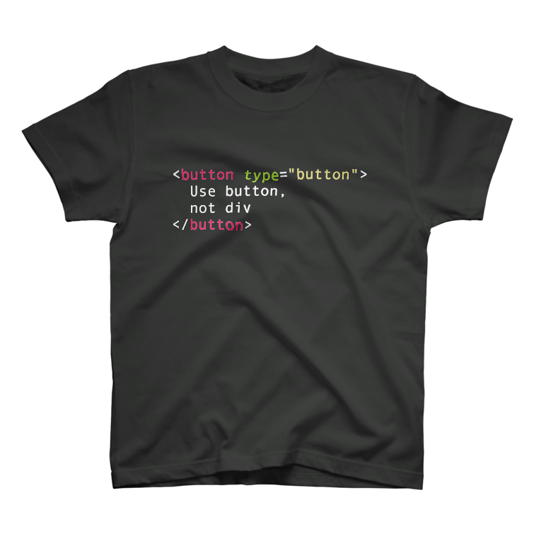

息を吐くようにアクセシブルな実装をする
<header role="banner">
hogehoge
</header>WAI-ARIAは、ウェブコンテンツおよびアプリケーションの
アクセシビリティと相互運用性を改良するための
フレームワークを提供する技術仕様である。
WAI-ARIAはアクセシビリティを高めるため
マークアップ言語のセマンティクスを
補強するためのもの
WAI-ARIAは何を補強できるか
rolearia-*aria-*<ul role="tree" aria-label="menu tree">
<li role="treeitem" aria-selected="true">...</li>
<li role="treeitem" aria-selected="false">...</li>
</ul>role<ul role="tree"></ul>これはツリーウィジェットである
<li aria-selected="true" role="treeitem">...</li>このツリーアイテムは選択されている（いない）
<ul aria-label="menu tree" role="tree"></ul>このツリーウィジェットの名前プロパティはmenu treeである
これらの付与されたセマンティクスはどのようにユーザー（支援技術）に伝わるか
OSが支援技術にセマンティクスなどの
情報を伝えるAPI
ブラウザがレンダリングしているコンテンツを
アクセシビリティAPIのオブジェクトに変換して
支援技術に伝える
まじで
<a href> / <button>
<h1> / <section><table> / <th> / <td>データの参照構造を示す
input / label<dt>会社名</dt>
<dd><input type="text" /></dd><label>
会社名 <input type="text" />
</label><datalist>Can I Use datalist? Data on support for the datalist feature across the major browsers from caniuse.com.
alt / title<a href="#" class="right-off-canvas-toggle show-for-small globalNavButton" aria-expanded="true">
<img src="https://www.m-g-n.me/wp-content/themes/mgn/src/svg/sandwich.svg">
</a><abbr title="point">pt</abbr>tabindex0 or -1 を使用するhogeWAI-ARIAはホスト言語のセマンティクスを補強する
roleroletabalertdialogsearchalertライブリージョン、要素内の変化を監視
<div role="alert" aria-live="assertive">
<p>！</p>
</div>aria-label 名前プロパティを与えるaria-expanded 展開されているかどうかaria-hidden 隠されているかどうかaria-controls 制御する要素を示すaria-current 現在位置であることを示すaria-describedby 説明テキストがある要素を示すaria-live 自動更新される要素を示すaltの代替
aria-expanded要素の開閉状態を表す
≠ 表示/非表示
<nav aria-expanded="true" aria-labelledby="menu-toggle-link">
<a href="#menu" id="menu-toggle-link">Menu</a>
<ul aria-hidden="false" id="menu"> <!-- こっちが非表示 -->
<li><a href="./works">Works</a></li>
...
</ul>
</nav><h7></h7><div role="heading" aria-level="7"></div>HTMLの持つ機能を代替的に実装する場合
<input type="datatime-local" /><div aria-expanded="true">
<input role="combobox" type="text" aria-haspopup="grid" aria-activedescendant="date-2018-12-09" />
<div role="grid">
table widget...
</div>
</div>通常のHTMLネイティブ要素を装飾のためだけに代替しなくても良い
<span role="checkbox" aria-checked="true" tabindex="0"></span><input type="checkbox" checked style="opacity: 0;/* visually hidden style */" />
<span aria-hidden="true">
<svg>...</svg>
</span>roleやプロパティを上書きする必要がある時例) role[tablist] > role[tab]
<ul role="tablist">
<li role="tab"></li>
</ul><ul role="tablist">
<li role="none">
<a href="#tabpanel-1" role="tab">Tab</a>
</li>
</ul>ARIAの実装例、キーボード操作の標準も例示
ホスト言語をHTMLにしたときのARIAの使用規範
グローバルaria-*属性を除くaria-*属性は付与できる要素 or roleが定められている
<div aria-expanded="false"></div><section aria-expanded="false"></section>ありがとうございました！